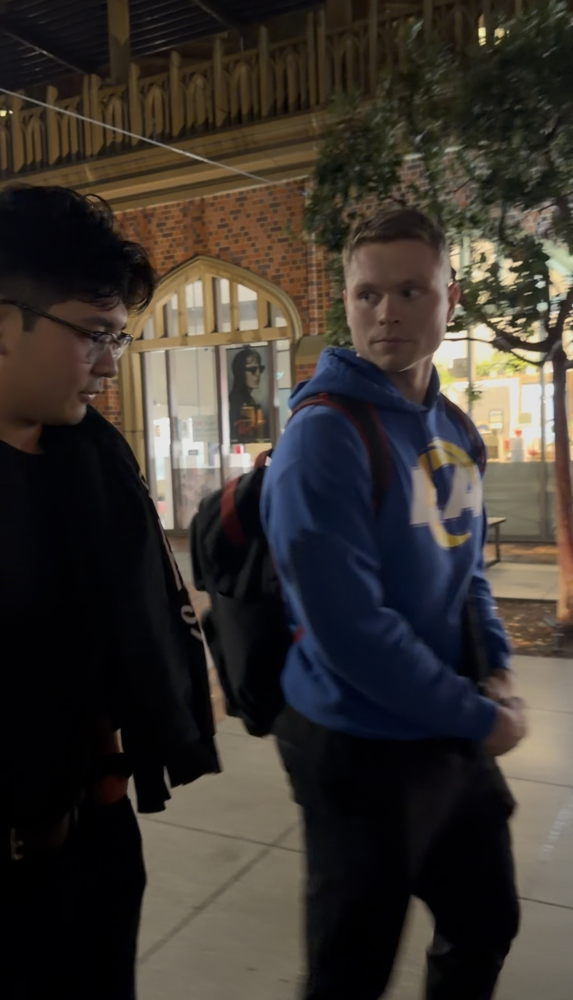
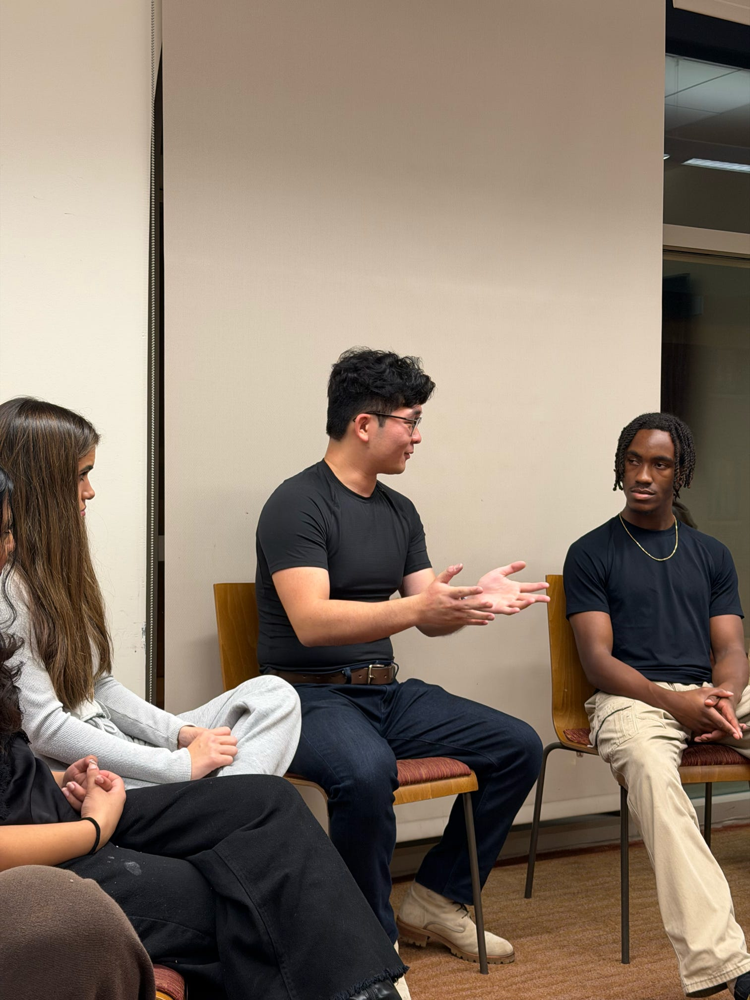

Steven He's Talk at USC: Reflections & My Biggest Takeaways
Quick Intro
On November 17th, 2025, Steven He - a top sketch comedy creator with over 28 million followers as of this writing - came to speak at USC and give his advice on how to be successful at social media.
He gave a lot of unique insights - in particular, he gave a lot of great analogies which I'll share in the sections ahead - that complately shifted my paradigm for how I think of content creation, especially in the business strategy sense.
As of Spring 2026, I'm taking a break from USC and the PhD program for the first time since starting in Fall 2021 to both focus more on gaining actual professional work experience and the chance to dedicate more time/resources to content creation again since the PhD leaves me with little time, and little money in the free time I do have to buy equipment, hire someone to film, edit, etc.
During my PhD, however, I still had the tremendous advantage of being able to meet some incredible people in the creator economy since USC is located right at the heart of the creator world in Los Angeles.
This is one of the things which made the pain and difficulty of doing a PhD particularly worth it, at least to this point.
But without further ado, let's dive into my notes and biggest takeaways from the Steven He talk.
Caption: Steven He and I walking on campus after the talk.
Caption: A picture that my friend alex took of Steven during his talk.
Quick Intro on Steven
First, Steven gave us an intro on himself and his background.
He was talking to a relatively small room of ~20-25 content creators and top marketers at USC.
He introduced himself as a Sketch Comedy Creator and that currently he's the biggest sketch comedy youtube channel on the planet!
(p.s. this was super cool for me in particular since I was taking Sketch Comedy at USC that semester so this was sort of a full circle moment connecting that with social media)
He'd accumulated 28 Million followers as of the talk and over 200 Million Views in the month of October 2025 alone.
He also mentioned something along the lines that "youtube is all I think about" - which alludes to one of the biggest takeaways which we'll get to later in this article.
After university, he set out to be an actor and did very well, but then 2020 (covid) hit and all auditions, classes, casting calls, and so on all came completely to a halt.
As this was happening, he asked himself the question: "How do I progress as an actor?"
At the time, his thought was that if he could build and command a massive following on social media, that casting directors would be much more likely to hire him.
Since, for example, if he had three million active followers, then theoretically, those would be something that he could then leverage when getting an acting gig since he could say "hey, if you hire me, I'll bring 3 million viewers to your show."
As he became a creator and continued creating content, he studied his favorite channels and went in-depth on things like "how do they write, how do they cut, how do they perform, how do they edit, and so on" and he always made comedy sketches.
His Optimization Process
For him, he took the roughly first 200 comedy sketches to learn the skills he didn't have, like how to expose a camera, or light a scene, or how to edit, etc.
Then at Sketch 220 - this was the first one that went viral and blew up.
He ran similar sketches for about 100 more time, then he hit emotional damage - which is his long-standing series that completely blew up his main channel to where it is today.
So early on, he primarily treated himself as a "classic video maker" where to get better, he'd make a video, then make another video, and incrementally get better in between per the rough process above.
Think Like a Traditional Business That Offers Traditional Product Lines
After initially primarily thinking like a more traditional video maker, Steven and his team transitioned into thinking much more like a traditional business that offers traditional product lines.
He gave several processes and analogies which were very helpful.
With his process here, his process is that his team will: Study a demo that he sees potential in, Study the most successful channels, and the most successufl types of videos in that channel or niche (probably a couple dozen from a couple dozen different channels), then study things like how they write, how they film, how they light, how they do their sets, how they perform, how many people they use, and all of the elements as deep as they can go. Then they would craft their own product for that market.
They'll then take ~100 tries (e.g. make 100 shorts), then take feedback on every one of those (watchtime, comments, etc.) then by short ~100 they're usually successful in any new market they enter into with a new channel.
Then once that's continuously successful, they then build a team around it to write, produce, shoot, edit, and post those videos at a certain cadence.
Then once that's complete, Steven's job (with the way his company is currently built), his job is to go build the next system.
For example, his current four systems - as of this writing - are 1) a shorts system which outputs 7-10 pieces of short form content a week, 2) his flagship comedy sketch system, 3) a 30-minute episodic improv show, and 4) his Steven He live channel.
Each of these has a full team behind it with the way his company is currently set up.
For Short-Form, Optimize For Instagram
They shifted their short-form strategy to optimize for instagram and he significantly grew there this year - it's become one of their biggest revenue drivers.
In his opinion, Instagram is the best place to get millions of views (as of the time of this talk in Nov 2025).
YouTube used to be king (and still is!) but surprisingly he's also seen a lot of ad spend shift towards short form and they've been able to take advantage of it.
How to Think About Virality
During the Q&A, Steven was asked something along the lines of "how did you decide what to do next after "emotional damage?"
He then proceeded to talk about the common experience that many creators have which is that we make 100 videos, then 1-2 of those 100 completely pop off. But then you have to continue making that type of video over and over again (much to your chagrin) if you want to continue performing well - even if it's not the type of video you want to keep making going forward.
He made a good analogy with singers, which is that "as creative people, by nature, we don't want to sing the same song for the next 30 years..."
"Think of yourself as a regular business which sells a regular product"
So the most healthy and productive way to think about it - which will get the most growth and revenue (things we want most out of this career) - is to consider yourself a business, a regular business that sells a regular product.
He gave a lot of GREAT analogies throughout the talk which illustrate this.
The first was to consider youself as being similar to a breakfast stand at a farmer's market. If you make 100 different things that people DON'T like, then your 101st thing - let's say it's a burrito - goes crazy and sells out and then eveyrone says "I LOVE THIS BURRITO."
The problem is that creators encounter a very similar phenomena where they finally create their equivalent of the hit burrito, but then that once they do strike that jackpot, their natural tendency is to say "let's kill this burrito and sell a coffee... or something else" and then the audience from yesterday that loved the burrito comes back and expects that again, and you say "sorry, no burrito today - instead, we're selling avocado toast!"
To map the analogy back to being a creator, many creators might create 100 bad pieces of content, finally pop off, then their natural tendency is often to NOT continue that thing since they're creative people.
So the question is: how do we, as creators, deal with this?
The most productive way, he found, is to consider it to be like servicing your audience.
So if one video blows up to a million views, assume a good number of people loved that video, then consider that to be something that you should keep serving to the audience until it hits its natural waning in popularity. Consider that to be one "product" line - if we're going back to the real-world analogies.
Do try to innovate and add something new everytime, but keep it a little more consistent.
You must deliver the SAME experience for long-form in particular since with long-form, people intentionally clicked, but with short-form there's a little more leeway since people usually don't just intentionally click on your videos. You have a lot more freedom to try things which don't work.
ChatGPT SUCKS at comedy... for now
As a random side-tangent, I wrote down in my notes that Steven mentioned that ChatGPT isn't quite smart enough.. at least not yet. In another 2-3 years maybe it'll get to the point where it can get laughs, but it's not quite there yet.
Whether it's 4 of them in a writers session, or him writing a sketch himself, AI isn't there but he definitely thinks it will get there eventually and thinks it will be a huge asset and boost to all creators.
How to Not Burnout Making The Same Video All The Time
Steven answered this from a few different angles.
The first - which I've already alluded to - is by changing your perspective about yourself.
"The Artist vs The Professional"
It took himself a while to learn but is an important one!
It's the artist versus the professional.
What's the difference?
The artist expresses, and a professional delivers.
The difference is the direction.
The artist thinks "I want to make this story," "I think this is cool" "this is what I think is awesome..."
Whereas a profesisonal thinks "how can I make this story for you", "what can I produce for you."
Sometimes the two will coincide, but Steven emphasized that if for the majority of the time, if you think of yourself as a professional in this sense (instead of an artist), you will be happy to do your job.
Context Helps A Lot
Meaning: he took a lot of time studying those he admired - PewDiePie, MrBeast, all of the greatest comedy sketch creators (Nathan Doan, Alan Chikin Chow, RDC World, CalebCity), etc.
He studied all of their sketches - and one GLARINGLY obvious fact is that it took ALL of these creators hundreds of tries too.
For example, it ook Mr Beast MANY years to get any views, so if you're taking only 100, 200 videos to get any views, you're doing pretty well relatively speaking!
How To Pivot
Steven started off advice for pivoting by telling us a cautionary tale where he mentioned how in either 2022 or 2023, he took some time off of his social media to instead focus 100% on creating his own custom series which turned out to be 6 episodes and featured many of the biggest creators in the world.
In his opinion, it was a GREAT show, at least from his POV.
He invested $400,000 into the project, and it FLOPPED.
But not only did the series itself underperform, but since he also posted it on his main channel, it tanked the performance of all his other sketches on his channel by ~80-90%!
But in the long run - as painful as this was in the short term - he became a much better creator going forward after this experience.
You Can't Pivot TOO HARD and Expect The Same Numbers
The lesson here is that you can't pivot TOO HARD and expect the same numbers (at least for the same channel).
So going back to his cool analogies he made earlier, it was like he was Apple, and he had been making the iPhone before.
10 Million people a year lined up outside his door to buy the iPhone, and he delivered it, and they were happy.
Then one year, he went "SURPRISE! HERE'S A TOASTER!" and people stopped coming back as a result, largely since they weren't being served what they were expected and felt betrayed.
From then on, he came up with the following tactic that top traditional tech companies have used:
The 10% Pivot
What he means from this is instead of going from 3-minute comedy sketches (what he made before) straight into making a 12-minute TV show with different directing, different writing, different cast, different cinemotography, different everything, he'll only change like 10% at a time.
And since he's only changing 10% at a time, he'll test 10 different directions before he'll commit.
For example, he'll take a comedy sketch and MAYBE add one more cast member, or make it 5 minutes instead of 3 minutes, or another element of action like fight choreography etc. - then whichever of these works, he'll keep, and whichever flop, he'll not keep.
So instead of being Apple and pivoting from an iPhone to a Toaster, this is the equivalent of now offering an iPad, which is 99% of the same original experience.
Don't Be Afraid To Take A LOT of Failues
Try like 10 directions of a 10% pivot, let 9 of them fail, then double down on what does work.
You Must Be Obsessed
Steven mentioned that you have to be all-in, that it's a requirement.
As he went from an actor to a new content creator to different tiers of content creation, then to where he is now, and now he's met world class people from many different tiers of life, he's seen one thing in common with all of them.
The observation is that the one trait that all world class people have in common is obsession. He's NEVER met someone who's reached that level who is not obsessed.
Kobe explained it best which is he told the story of his youth and how be got into basketball, which is that initially, he was an average kid, and didn't even score a point in an entire season.
Then he started working more hours in the practice court than everybody.
Then by the end of that first summer he was 200 hours ahead of everyone else.
Then he continued doing this.
Then by year 2, 3, 4, he got thousands of hours ahead of everybody else.
By this point it would take SERIOUS dedicaiton for his peers to reach his level.
Then in his pro game, he had 20,000-30,000 hours of practice ahead of everyone else. By that point, no one could catch up to that 20-30,000 hours - it's virtually impossible.
According to Steven, obsession is the only 100% accurate trait on this tier of professionals.
People who are THAT GOOD are usually at the point where they spend all day/night thinking about it. They spend every waking moment thinking about it.
And because of all that work, they are SO FAR ahead of all their competition.
Social media is MUCH more competitive than ever.
You can't just start a youtube or tiktok channel like you could 6-10 years ago and became successful without any work.
Instead, obsession will be the thing that differentiates you (and compounds over time) from everyone else in today's competitive social media landscape.
How To Not Burnout (In General)
"Burnout" regarding content creation is something that many of the people in the audience had experienced, but Steven had a very interesting take on this.
With Content Creation, Steven gets the OPPOSITE of burnout
With content creation, Steven mentioned that he gets the REVERSE of burnout - he gets itchy, like if it's Christmas and he is at home not near a camera - he's drawn to doing it ALL the time.
He mentioned how he thinks about nothing but YouTube all the time (which sort of harkens back to the last section).
BUT - this is another key insight here - he has burnt out in some aspects and actions throughout his content creation journey.
Through the journey of content creation, there are many actions which you WON'T like doing. For example - taxes, accounting, etc.
BUT - this is an even bigger insight - he also emphasized how the learning period of most skillsets (e.g. editing in DaVinci resolve) and actions throughout will often burn you out.
Burnout goes away once you upskill (or outsource)
HOWEVER - once you gain the skill, that burnout won't happen again.
His Editing Software
He personally uses Da Vinci Resolve for editing, primarily because it's both free and very good for editing in general.
There Are Multiple Pathways To Becoming Successful
Steven mentioned that he might understand his niche for example - e.g. engagemetn tactics, hooks, or that saturated colors in the back help retention, etc.
But that some other people do it completely differently and throw everything he knows out the window (e.g. no writing, no shot change, no cuts, etc.) and still generate millions of dollars on their content as well.
All of The Biggest Channels Are Corporations
12 years ago or so, all the biggest channels were mainly just people in their bedrooms makign videos.
More recently, it's been a shift of all creators moving towards entrepreneurialism.
The biggest ones in particular are essentially becoming corporations (using entrepreneurialism to get there).
You CAN still just become a video creator, and make a living off of that - which would be a great life to have - but to be a successful creator today, the goalposts have shifted. You usually can't just turn on a camera and hit record in your bedroom anymore.
So with Steven - at first, he was just a performer, then after 200 10% pivots, he was a very good video maker, and that got him to about 10 Million Subscribers.
But to get to 100 Million Subscribers, he said he would have to obtain different skills - the skillset of entrepreneurialism.
He gave another GREAT analogy to describe this.
Think of going from 0 to 10 Million followers as being similar to being a mountain climber who wants to climb Mount Everest.
You have to gain the skillsets you need in order to climb Everest and get really good at them.
But if you want to climb to the Moon, the same skillsets will NOT get you there!
You can even be the GREATEST at climbing Mount Everest, but in no way will that skillset be useful in getting you to the moon.
In order to get to the moon, you have to learn a different skillset - how to build a rocket, and how to manage all of that stuff.
THIS is the reason why all big creators have shifted to entrepreneurialism - if their goal is to maximize success in income and impact, at least.
Content Creators Usually Have To Do Everything In The Beginning
This goes without saying, but most content creators - even Steven himself - have to to everything in the beginning.
The goal though is to get past the cold start problem, and once you find stuff that resonates, to delegate and build out that team perhaps similarly to how Steven does.
All MrBeast Talks About Is YouTube...
Harkening back to the discussion on obsession, Steven mentioned that he's met MrBeast a few times (the top content creator in the world as of this writing in 2025), and that ALL MrBeast talks about is YouTube - he literally doesn't talk about anything else when you're in person with him.
MrBeast's Advice To Steven He - How To Scale Videos
Earlier thie year, Steven was talking to Mr Beast about scaling videos, and Steven mentioned to Jimmy that he was facing difficulty with respect to getting a good return on his videos.
Steven, at the time, was putting 10x the budget and spend into his videos, but was NOT seeing 10x the results.
Steven mentioned to Jimmy (Mr Beast) that he expected the 10x budget to produce 10x results, but Jimmy said "you're wrong!"
Jimmy explained that it's not 10x the budget that's the issue (or even necessarily the right thing to focus on), it's that Steven and his team hadn't found the right thing to spend it on.
Key Insight: Instead of Asking "How Much Money Should I Spend on a Video?," Ask "What Element, when scaled, gives me the greatest return on investment?"
So from that point forward, instead of spending his time deciding whether he should generally spend 10k or 50k or 100k on a video, he shifted his focus and intention to "what element, when scaled, gives me the greatest return on investment?"
For him specifically, he looked at his 10% pivots from the last year, and after looking at that, it was very obvious that the highest ROI element was action - specifically action choreography (for him).
So he took that specific element and REALLY doubled down on and scaled that specific action. He specifically brought in the action team from the movie Shang-Chi and had them drastically improve their videos.
One of the biggest sub-actions within choreography specifically was fight choreography. Specifically, bigger, better action, which also occured more often within the videos; to increasing spectacle, e.g. including weapons, to smashing him through a table in the videos, he really ramped up the action choreography to be bigger and bigger in his videos ever since he isolated this variable.
Steven Recommends The Sony FX3 Camera
He also mentioned that he uses the Sony FX3 for his content.
One of my roommates is a freelance photographer/videographer (he gets paid a lot to do some very cool gigs!) and I asked him about the FX3 after since he knows a lot about various cameras.
He believes that it's the best pound-for-pound camera in terms of the price value of what you're paying.
He mentioned that there's several differences between a camera like the FX3 and a camera like a modern iPhone - too many for me to have remembered or go into detail with here - but the primary difference between the two cameras is the bit depth which determines the number of colors a camera can give you.
Apple iPhones for example, record with 8 bits, which corresponds to a million discrete colors that the camera is distinguishing, whereas the FX3 records with 10 bits, which is equivalent to a billion different colors (a 1000x increase over the iPhone).
The human eye can distinguish (roughly) between 3 and 10 million different colors (sometimes up to 100 million, but this is very rare), and the improvement jumping from 8 bits to 10 bits can be especially noticeable and much more crisp, especially with things like skin tone being the biggest giveaway.
The FX3 also has a much better dynamic range and works especially good with shadows, contrast, and stuff like that. Sony's S-log in general is very good with this. Dynamic range refers to how well a camera can handle having both brights and shadows in the same shot (e.g. how bright of colors or how dark of shadows it can see before it saturates and you can't see anything for those parts of the video).
The only main downside my videographer roommate mentioned about the FX3 is that it's not beginner friendly - primarily because it'll require a lot of post-processing of the footage, which is recorded in S-Log, I believe.
Something he's always said repeatedly over many conevrsations I've had with him is that "any camera since 2015 is a good camera."
So the FX3 certainly isn't required but can definitely improve your videos if you understand why/how it works and are ready to make the investment.
Tangent: Best Camera Lenses
I didn't write any notes saying if Steven recommended any specific camera lenses or not, but I asked my roommate for his best camera lens recommendations for the FX3 (and general advice for how to think about camera lenses) and he recommended likely getting the following.
Usually, people who film with these types of cameras get what's referred to as or called the "holy trinity" of camera lenses: the 16-35mm, the 24-70mm, and the 70-200mm lenses.
The length that's the most commonly used across all circumstances is the 24-70. It's not super wide like the 16-35mm range but not too tight like the 70+ range either. This is the one that people utilize the most.
16-35mm is more often used for wide shots, and 70-200mm is more often used for tighter shots.
The other primary consideration with lenses is the aperature or "f-stop" number which you see on lenses. A lower f-stop, like f/1.8 is better than a higher stop of f/2.8, which is better than an even higher stop of f/4; lower aperature essentially means lower light or bokeh (or blurriness, I think).
If you had to go with one lens, 24-70 might be the best, and he also did mention that 50mm in particular is special since it's the same focal length of the human eye (give or take) so that's always a solid all-around versatile option.
Personally I myself don't know a ton about camera lenses, but hopefully this gave a good intro on the topic!
Steven actually did talk about lenses in This Video From 2022 on YouTube where he talks all about camera equipment and lenses. It's a bit outdated (since he uses the FX3 now) but definitely gives A LOT of great insights on lenses etc.
He thinks that they can add A TON to story telling (whether it's focal length, f-stop, or focus).
Steven himself explicitly states here that he likes the 50mm lens since it's a visual style that makes the viewer feel as if he/she is in the room with him (alluding back to what my videography friend said about 50mm being similar to the focal length of the human eye) since that's a normal field of view or perspective.
And if he has multiple characters in a scene, he likes placing the camera between the two (and then flipping it) as he demonstrates in 13:00 of the above video (or, simply, between cuts, he puts the camera at the previous person's perspective for example), which makes the videos feel even more immersive for the audience/viewer (in addition to the more natural type focal length).
He also mentions that using a 50mm prime lens for all shots (instead of using a zoom lens for tighter shots) is what he prefers - since he would simply move the 50mm closer for tighter shots. Staying at 50mm (but moving the camera closer or farther as needed) is the ideal.
Focus on Instagram For Short-Form
According to Steven, while TikTok was the king of short form for several years (e.g. early 2020s), the biggest opportunity right now lies in instagram (and youtube shorts) for short-form. I can't write down the reason for that here, but he emphasized that instagram and shorts (especially instagram) are where people should focus on for short-form growth.
Key Insight: Screw Virality - Focus on a Repeatable Audience Experience (RAP) Instead
Steven mentioned that if he were starting over, he'd probably focus on short-form first. And maybe he'd also do some sort of long-form videos that could be derived and cut up into short-form videos easily (e.g. one 3-minute comedy sketch that could be cut up into three one-minute videos).
However, a key insight which Steven mentioned is that you SHOULD NOT focus on virality (e.g. doing a water bottle flip video that goes viral or some random thing which goes viral, etc.).
He doesn't care much about going viral, because virality is a one-shot thing.
Virality in the one-shot sense does not create a lasting impression.
This isn't something that can give you lasting success, at least not in the sense of making good money (e.g. a million dollars a year).
So perosnally, Steven focuses on "creating an audience experience" that they will always want to come back to.
The most effective way to do this is to flip the perspective, and think of yourself as a viewer, and observe all the things you watch, and from there, dissect why you watch certain channels that much.
This studying (which we've alluded to a ton throughout this article) will teach you a lot more than the optimizing and 10% parts alone.
The Optimization Process
To reiterate Steven's optimization process from earlier (since this is so important), it's about:
Trying 100 different things, most of then won't work, then you'll be lucky if one thing does work.
But you can change the speed at which you STUDY alongside this optimization process, and this studying will help you the most in how fast your channel will pop off.
For example, if you only study one channel as you do your optimization process, it might take 300 videos to pop off for example. But if you study like 50 or 100 channels, you might be able to hit it in the first 20.
Hard work will be absolutely required either way, but the SPEED at which you're successful is something he believes can be accelerated through this process, in his opinion.
Steven's Process for Studying Other Channels
Here's a quick rehash of Steven's study process for studying other creators and learning more quickly:
Study examples of successful people as described above, study your own channel (your own data, metrics, what the platforms give you), and use that - find your weaknesses and hone in on them.
e.g. if it's retention, seek techniques to improve your retention, try 10 different things, then 8-9 might not work, but the 1-2 that do work will be ones you want to hone in on and become good at. Then you will have that "feather in your quiver" so to speak.
Then once you solve your videos weaknesses, you will be a powerful enough creator to command that viewership.
Steven's Thoughts on One Channel vs. Seperate Channels
The last thing that we asked Steven, if I remember right, was a question along the lines of whether we should post all of our videos on one channel or seperate different types of videos on different channels (e.g. if you posted lifestyle content before but started making a different type of video - should you keep that on the same page or make it a seperate niche?).
Steven's response was something along the lines of that he's talked to a lot of people about this topic over the years.
And with his channels specifically, if he puts non main channel content on the main channel, then performance dips and that also drags down the next couple of uploads, since - if we go back to the previous iPhone vs Toaster or Burrito vs Avocado Toast analogies - we gave the audience a negative experience.
In this case, they were expecting either a burrito or an iPhone, but they did not get the burrito or iPhone. Thus, they won't come the next time.
YouTube has, more recently, stated the case that the algorithm is now powerful enough and smart enough to be able to know the difference and serve it to two different audiences/demos automatically.
But while YouTube maintains that the algorithm is powerful enough to know the difference now, Steven is still a bit conflicted on this since he thinks that uploading two different content types on the main channel still has a negative impact on his main channel's performance.
So for the time being, he thinks that people should start new channels for different niches and keep those channels seperate.
Summary
Steven's USC Talk was an absolute masterclass in content creation -- he gave tangible analogies and strategies which transformed my thinking about content creation and the process for getting better at content fast.
To briefly summarize, the high-points of the talk were:
- Steven's background and his story of becoming a creator
- To treat content creation like a traditional business with traditional product lines
- Steven's system for finding social media success: Fail 100-200 times, optimize along the way, then double down on the one thing that works
- His iPhone vs Toaster, and Breakfast Burrito vs Avocado Toast Business Analogies
- Instagram (currently) is king when it comes to short-form
- Avoiding "Burnout" doing the same thing: The Artist vs The Professional
- You can't pivot too hard and expect the same numbers
- How To Pivot: The 10% Rule
- Don't be afraid to take A LOT of failures
- All top performers are OBSESSED
- Burnout goes away once you upskill (and/or outsource)
- Focus on the highest ROI element rather than blindly investing more in your videos
- Forget virality - focus on a Repeatable Audience Experience (RAP) instead
- Steven's optimiztion process (mentioned several times)
- Steven's process for studying other channels
- Steven's thoughts on posting on one channel vs multiple seperate channels
Steven gave A LOT of tactical advice, and it's definitely a LONG read, but totally worth it if you're a creator and are looking to improve. I personally gained a completely new perspective and look forward to applying this to my own content creation going forward as I hopefully look forward to becoming a full time creator soon.